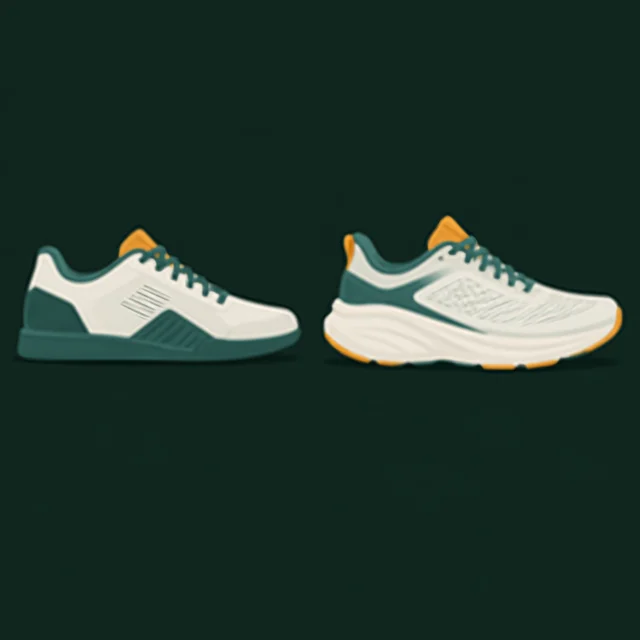

01 · основа всего
Обувь
- Для силовых
- Плоская, жёсткая и устойчивая подошва. Мягкая «пружинящая» подошва беговых кроссовок проседает под весом в приседе и тяге — стопе труднее держать опору.
- Штангетки
- Обувь с жёстким приподнятым каблуком. В исследовании на 25 людях в них при приседе со штангой корпус меньше наклонялся вперёд, чем в беговых кроссовках1. Полезны при скованных голеностопах, но новичку не обязательны.
- Для кардио и бега
- Учёные предлагают выбирать беговую обувь по ощущению комфорта: удобная пара помогает двигаться привычной траекторией2. Меряйте вечером и в своих носках.
- Одна пара на всё?
- Можно: универсальные кроссовки с невысокой плотной подошвой подойдут и для силовой, и для дорожки. Главное — не тренироваться в уличной обуви: это вопрос гигиены и правил зала.